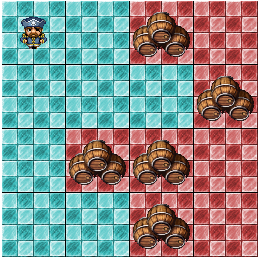

Barril de Rum
TL: 1 segundo (~50 casos)
ML: 64 MB
Os piratas do Caribe comandados por Diego pretendem invadir o armazém contendo barris de rum. O armazém pode ser representado por uma matriz de N linhas e M colunas.
Cada posição da matriz pode ou não conter um barril de rum.
Um pirata pode andar apenas horizontalmente ou verticalmente no armazém, ou seja, dar um passo para cima, baixo, direita ou esquerda. O pirata só pode andar se e somente se não houver um barril de rum para a posição onde ele for.
Ele não pode sair da matriz que representa o armazém
A entrada do armazém fica no canto superior esquerdo. Dado a configuração do armazém, qual a área máxima que um pirata pode cobrir? Ou seja, conte o número de posições que um pirata pode atingir!

A figura acima ilustra o último caso de exemplo. A matriz é de 4 linhas por 4 colunas, o pirata só consegue chegar nas áreas azuis, que totalizam 8 de área.
Entrada
A primeira linha de cada caso de teste contém o número N (1 <= N <= 1000) e M (1 <= M <= 1000), o número de linhas e de colunas. Nas próximas N linhas há M strings representando a configuração do armazém, se houver um "." então não há nenhum barril, se houver um "o" então há um barril. É garantido que a entrada do armazém não contém um barril.
Leia até o EOF.
Entrada de Teste
1 1
.
3 1
.
o
.
3 3
.o.
…
o.o
4 4
..o.
...o
.oo.
..o.
Saída
Para cada caso imprima a área coberta pelos piratas.
Saída de Teste
1
1
6
8